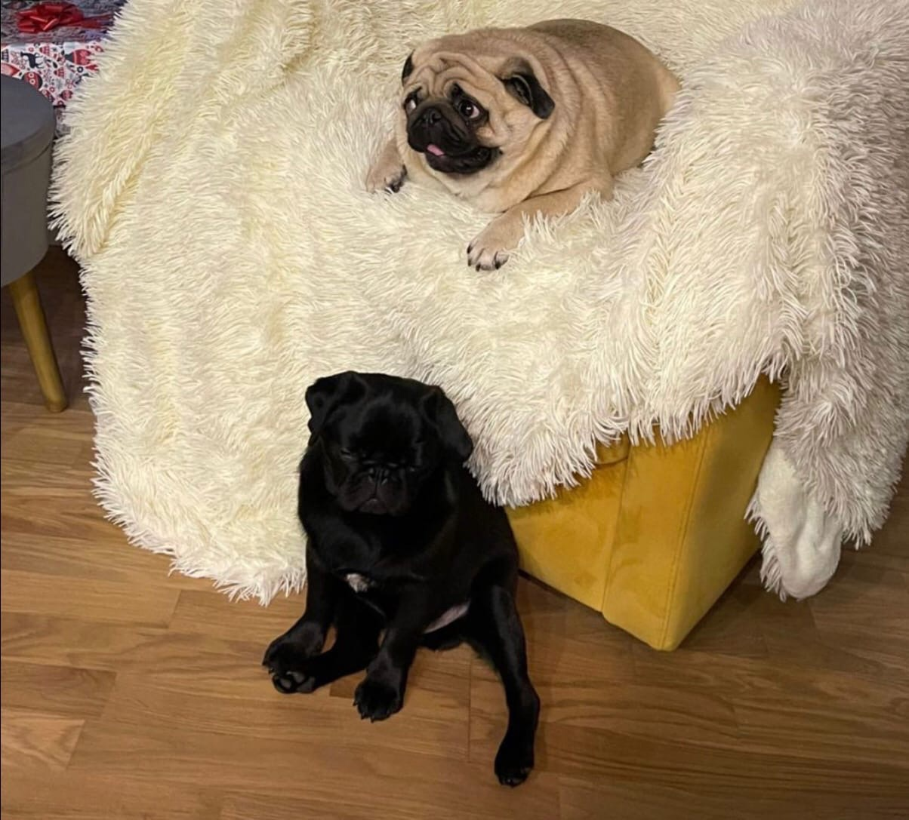
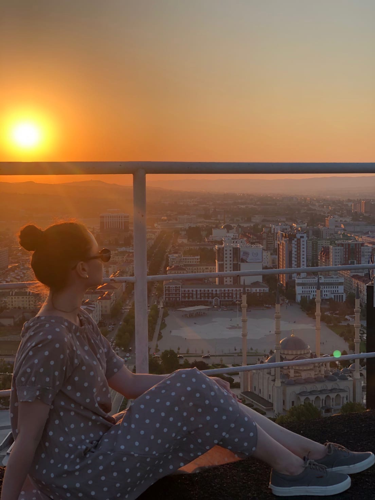
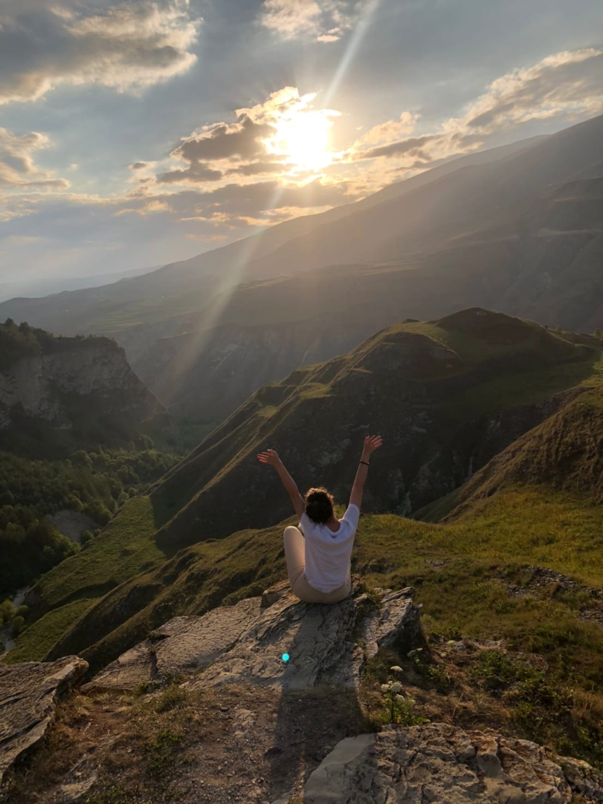
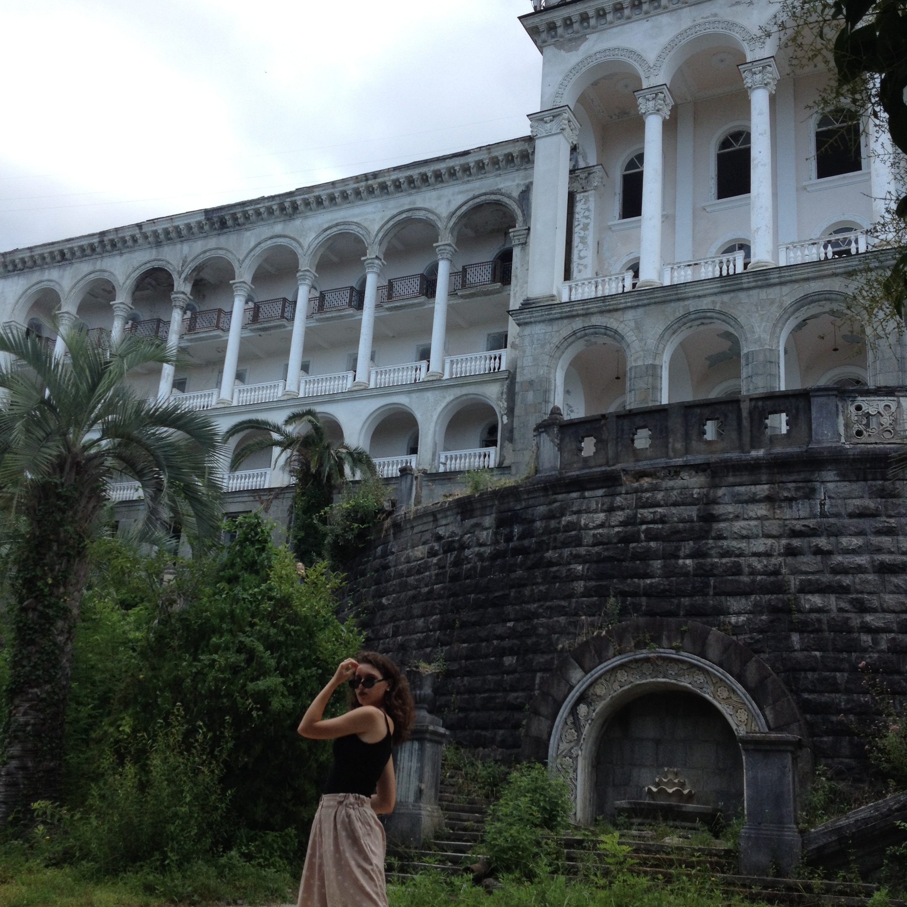
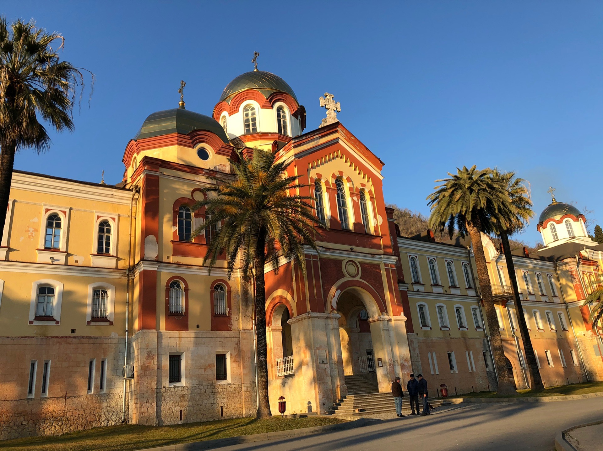

Я достаточно разносторонняя и общиетльная,мне достаточно легко найти общий язык с людьми и завести новые знакомства.Моя любовь-это мопсы.Вы только посмотрите на этих прекрасных и мылых собачек,которые очень дружелюбные и смешные.На картинке Леня и Валера,у них есть инстаграмм,за которым я слежу уже 2 года.pug_leonid
Этим летом я ездила в Грозный,мне очень понравились люди,они были досточно добрые и откртые,каждый подсказывал нам как доехать и добраться.Больше всего меня поразили их мечети,горы и Грозный сити,а также чистота
 Я очень люблю ездить в Абхазию,была там уже 2 раза,очень хочу поехать в 3 раз.Мне очень нравится там растительность,море,воздух,запахи специй,заброшенные здания,домики в горах.Конечно,для тех,кто любит комфорт и все удобства,нужно ехать не в Абхазию,сюда едут именно за природой.
 | Интересная информация обо мне | Раскрытие |
|---|---|
| Меня зовут | Злата |
| Мой возраст | 19 лет |
| Место обучения | ИТА ЮФУ
|
| Мои увлечения |
|
| Сериалы,которые я рекомендую посмотреть |
|
Фильмы,которые я рекомендую посмотреть |
|